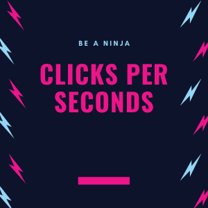
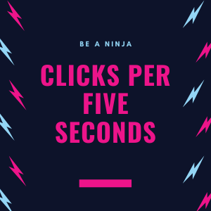
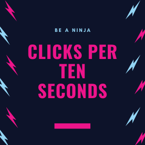

Hey Clicker! Practice Daily On This Platform To Become A Best Clicker And keep checking the upcoming link !!!

Accept Challenge
Clicks Per 1 Second
Challenge Yourself on a Clicks per a second challenge and what level are you at and improve them
Last updated 3 mins ago

Accept Challenge
Clicks Per 5 Seconds
Check the Clicks per 5 seconds Challenge and compare it with your other challenges and compare with your previous score !!
Last updated 3 mins ago

Accept Challenge
Clicks Per 10 Seconds
Lets see for how long can you keep up your fast clicking skills,What about 10 Seconds. Well you don't want your hand to hurt just by 10 seconds to keep Practicing and get used to it
Last updated 3 mins ago